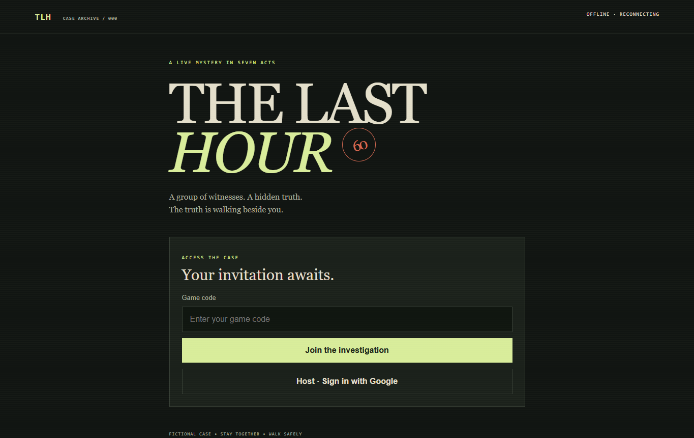

Game Design · JavaScript · Firebase
The Last Hour
A group of friends, seven stops, and sixty minutes to solve a mystery. I wanted to run the whole game from our phones.

The idea
I wanted a scavenger hunt where everyone could work together without passing out paper at every stop. Players solve puzzles, read their own clues, and watch each other for signs of a hidden role.
What I built
I used AI tools to turn the game into a mobile website with a shared sixty-minute timer and seven connected challenges. The host can run it from a phone: confirm arrivals, release hints, pause the clock, and announce the ending.
New rounds randomly assign about 20% of active players as murderers. Each gets a private secret agenda. The group works through the same puzzles, then submits its final guesses together.
I used Firebase for hosting, anonymous player sign-in, and live updates. Access rules keep private roles and answer keys out of other players' screens.
Trying it with real people
After we played, I simplified the screens and moved extra details out of the way. I also added controls for people leaving early, so the remaining group can keep going with all the clues it needs.
What I learned
A game can work in a test and still feel confusing when a group is trying to play it. Watching people use it helped me focus on clearer instructions, fewer words, and a backup plan when someone leaves or loses their connection.